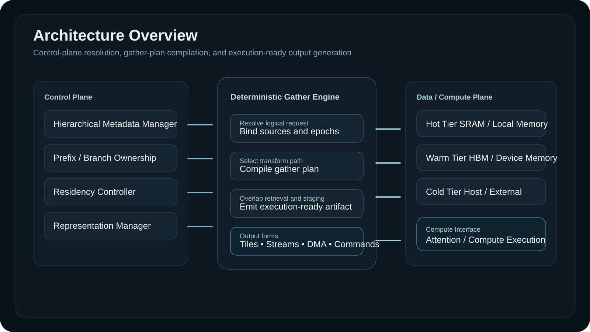

Long-context pressure
KV footprint grows faster than preferred hot-tier capacity.
Patent Publication Companion Page
Systems and methods for deterministic gather of hierarchically managed key-value state for autoregressive neural network inference.
This invention treats KV state as logically managed shared state rather than a flat tensor, and introduces a deterministic gather path that converts irregular, tiered, shared, and format-diverse live inference state into execution-ready artifacts for downstream compute.
Problem
Long-context autoregressive inference places increasing pressure on key-value state management. Historical KV grows with context length, session count, branch count, and resumability requirements. In deployed serving systems, the limiting problem is often preparation of historical state for arithmetic rather than arithmetic alone.
Conventional approaches duplicate shared prefixes, depend on incidental cache locality, or store history in flat per-sequence tensors that are difficult to share, relocate, compress, migrate, or reconstitute predictably. As state fragments across tiers and formats, execution preparation becomes irregular.
KV footprint grows faster than preferred hot-tier capacity.
Shared prompt history is repeatedly materialized or recomputed.
Implicit locality mechanisms do not understand sequence lineage, branch value, or gather-criticality.
Historical state spreads across local, package, host, and remote memory tiers.
Irregular state must still be converted into a stable execution contract.
Prefix sharing, branch divergence, and resumable sessions are poorly represented by flat storage models.
Core Invention
KV state is treated as logically managed live inference state. Objects are named independently of current physical placement and may be shared across sessions or branches.
A hierarchical metadata plane tracks ownership, placement, representation, version state, and tier residency. This plane is the substrate that makes deterministic gather correct and policy-governed.
A deterministic gather engine resolves logically distributed state and emits execution-ready tiles, staged buffers, stream descriptors, DMA chains, or front-end command structures for downstream compute.
Why Deterministic Gather Matters
Inference systems must do more than retain historical state. They must prepare irregular, shared, tiered, and representation-diverse live state into a stable execution form. Deterministic gather is the mechanism that performs that regularization while keeping control-plane knowledge separate from downstream compute execution.
Architecture Overview

The architecture separates control-plane resolution from compute consumption. Hierarchical metadata resolves logical identity, ownership, tier placement, representation, and version state. Deterministic gather then compiles a concrete execution path that regularizes irregular live state into a form that kernels can consume without metadata traversal.
Maintains logical identity, source descriptors, epochs, and residency records.
Represents shared lineage, divergence boundaries, and branch-local suffix ownership.
Places objects across hot, warm, cold, and optional remote tiers under explicit policy.
Tracks representation class, transform path, and tier-appropriate storage form.
Compiles gather plans, binds sources, schedules overlap, and emits execution-ready output.
Supplies normalized tiles or descriptor-form execution artifacts to downstream attention compute.
Why It Matters
Historical state can remain logically available without forcing uniform hot-tier residency.
Shared prompt regions can be referenced as common logical objects rather than duplicated state.
Prefix sharing becomes a state-management operation with direct execution consequences.
Logical identity persists even when state migrates across tiers or representations.
Policy can prioritize latency-sensitive sessions and gather-critical regions explicitly.
Remote ownership and local replication decisions can be integrated into the same gather path.
Differentiation
Method / Execution Flow
An inference step identifies the historical KV state required by the downstream attention operator.
Logical identity, ownership lineage, tier placement, representation class, and version state are resolved through the control plane.
Source descriptors are bound, transform paths are selected, and segment ordering is compiled into a deterministic gather plan.
Hot-tier reads, warm-tier transfers, cold-tier fetches, optional remote sources, and transforms are overlapped under plan control.
The gather path emits a regular artifact: materialized tile, staged buffer, stream descriptor, DMA chain, or command structure.
The compute unit receives normalized input without direct traversal of the metadata hierarchy.
The gather path is a regularization path, not merely a retrieval path.
Artifacts
Browser-friendly consolidated patent materials generated from the repository source documents.
Open document FigureRepresentative system view of control-plane resolution, gather planning, and execution-ready generation.
View figure FigureExecution-preparation flow from logical state request to execution-ready output.
View figure DocumentFigure-by-figure patent drawing guidance, reference numerals, and commissioning priorities.
Open document Figure SetBundled architecture, ownership, residency, and gather-flow diagrams for publication use.
Open figures RepositoryStatic site source and technical publication companion materials.
Open repository